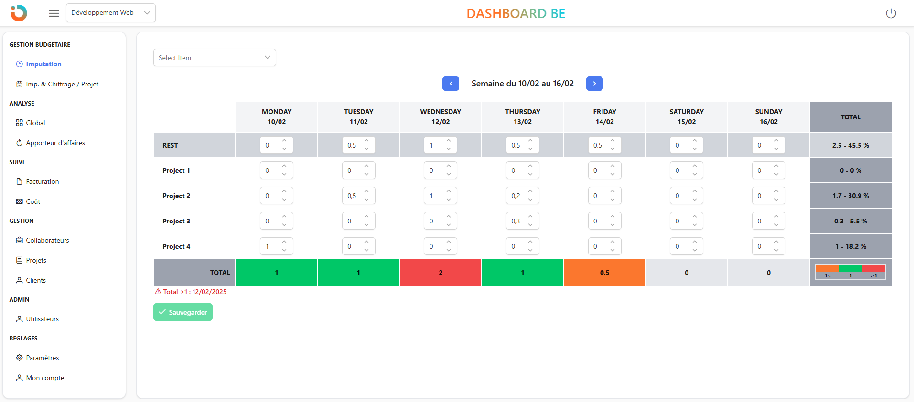
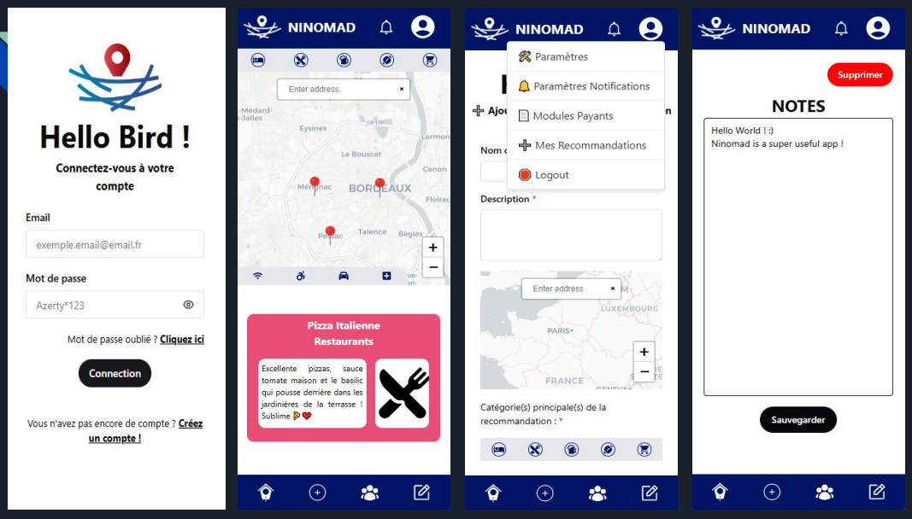
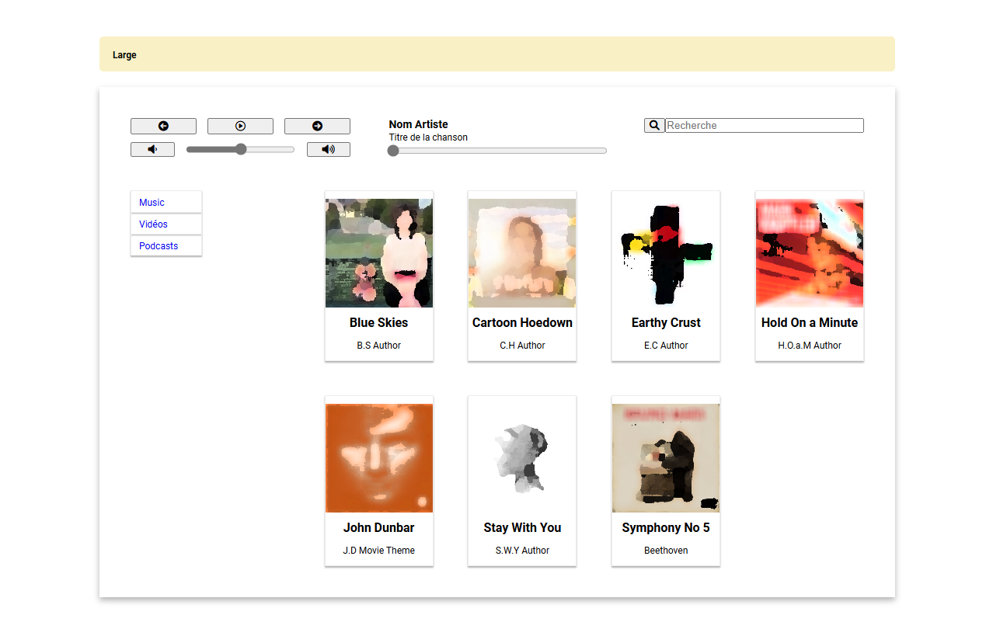
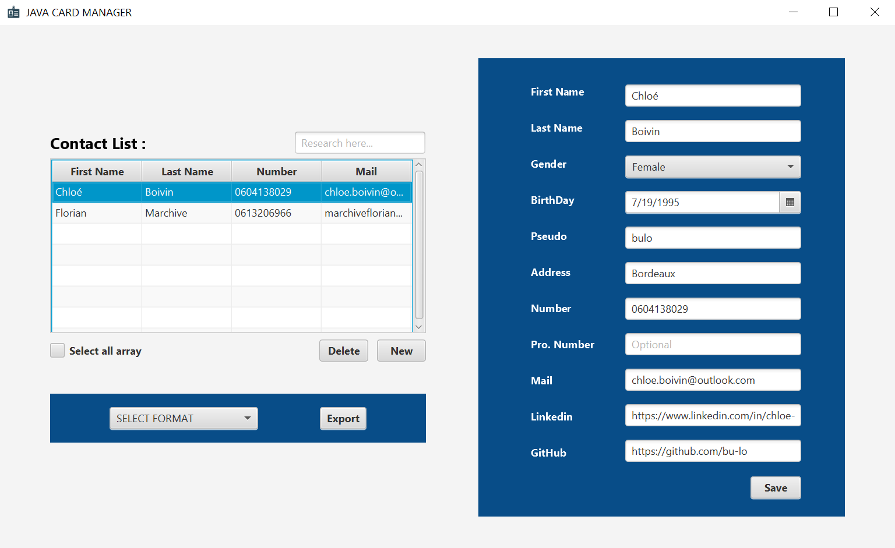
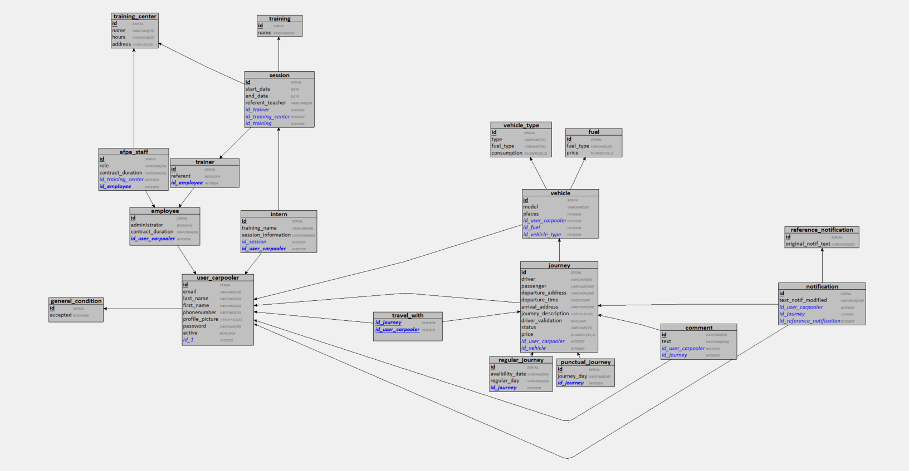
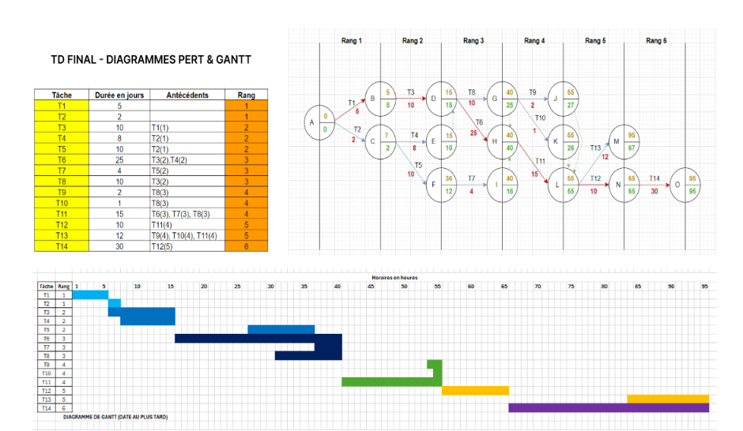
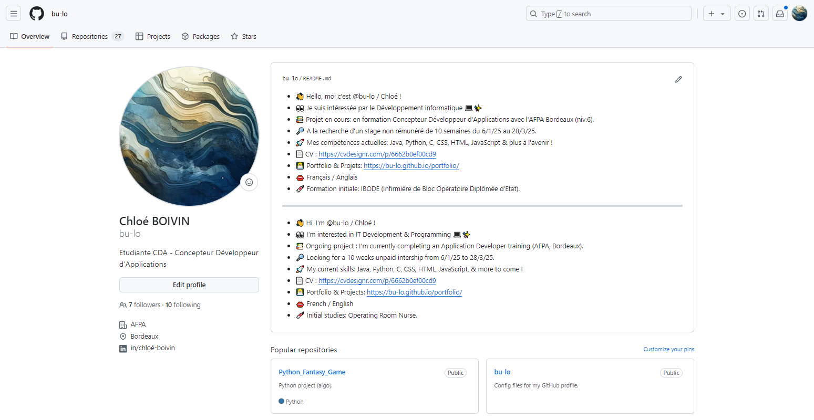

Le Début
d'une
belle
aventure
Comme le dit un vieux dicton:
"Les infirmières de bloc opératoire font les développeuses les plus minutieuses !"
Après plusieurs années dans les salles d'opération, je mets à profit ma
rigueur
et ma créativité au service du développement informatique.
Je concrétise et monte actuellement en compétences grâce à la formation certifiante de:
CDA - Concepteur Développeur d'Applications (niveau 6) avec l'AFPA de Bordeaux.
Actuellement en stage de 3 mois de Développeur Fullstack au sein de l'entreprise Fortil Toulouse.
Je recherche un poste de développeur Web, Front-End ou un contrat d'Alternance sur Bordeaux :
Consultez mon CV ! - Disponible à partir de Juin 2025.
Chloé 🌊

IBODE
💉 | Mon premier métier :
Infirmière de Bloc Opératoire Diplômée d'Etat
(Bac+5) sur Toulouse puis Bordeaux.
Travail d'équipe / Communication / Gestion du stress / Anticipation / Rigueur et Précision, sont
les
piliers de cette profession.
Certification: AFGSU niv.2 .

Triathlon
🌊 | Le Sport :
Passionnée par des sports aquatiques: Triathlon, Swimrun, Natation en eau libre.
Le sport a une place importante dans mon quotidien et mes valeurs:
Partage / Entraide / Collectif / Implication / Régularité & Persévérance.

COMPETENCES
LANGAGES


FRAMEWORKS


GESTION DE PROJET


GESTION DE DONNEES


CONCEPTION MODELISATION


FORTIL TOULOUSE
💻 | Développeur Fullstack (3 mois) :
- Angular / JavaScript / Figma / NodeJs,
- Docker / Git / Bitbucket / Méthode AGILE.
📝 | Compétences travaillées :
- Développement de modules complémentaires d'une application de gestion interne: Dashboard,
- Cahier des charges / Maquette / Développement.

Projets
💻 | Développement Web & Front-End :
- Expérience utilisateur (UX),
- Design & Graphisme (UI),
- Accessibilité.
🤝 | Gestion de projet :
- Planification, gestion d'équipe,
- Management.
Application DASHBOARD FORTIL
Contexte : Application responsive de gestion interne à l'entreprise Fortil, de projets et ressources.
Imputations des employés, référencement des clients et projets, suivi facturation, évaluation du CA annuel.
Technologies : Angular / JavaScript / Figma / NodeJs / Docker / Bitbucket / Méthode SCRUM
Application NINOMAD
Contexte : Application responsive pour les travailleurs itinérants.
Technologies : REACT / SpringJs / TokenJWT / Docker / Github / Méthode SCRUM
Application MEDIA PLAYER
Contexte : Application responsive d'écoute de musiques type Deezer/Spotify.
Technologies : HTML / CSS / JavaScript
Application JAVA CARD MANAGER
Contexte : Application Desktop de gestion de contacts avec un formulaire.
Technologies : Java / JavaCard / JSON / QRCode / CSV / Methode SCRUM : Jira
DATA BASE
Contexte : Manipulation de bases de données + diagrammes MCD / MLD.
Technologies : Docker / DBeaver / PostgreSQL / Looping
GESTION DE PROJET
Contexte : Manipulation des outils de gestion de projets.
Technologies : Excel / PERT / GANTT

GITHUB
Contexte : Dépôt Github avec mes projets & exercices.
Technologies : Java / HTML / CSS / JavaScript / Docker / PostgreSQL /...
